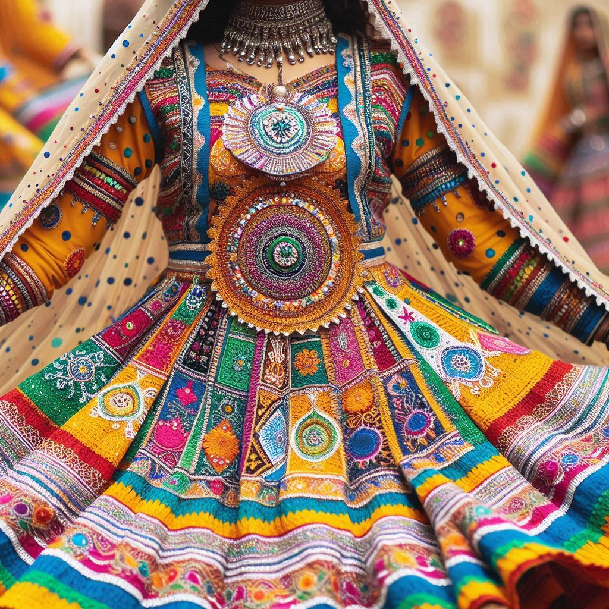
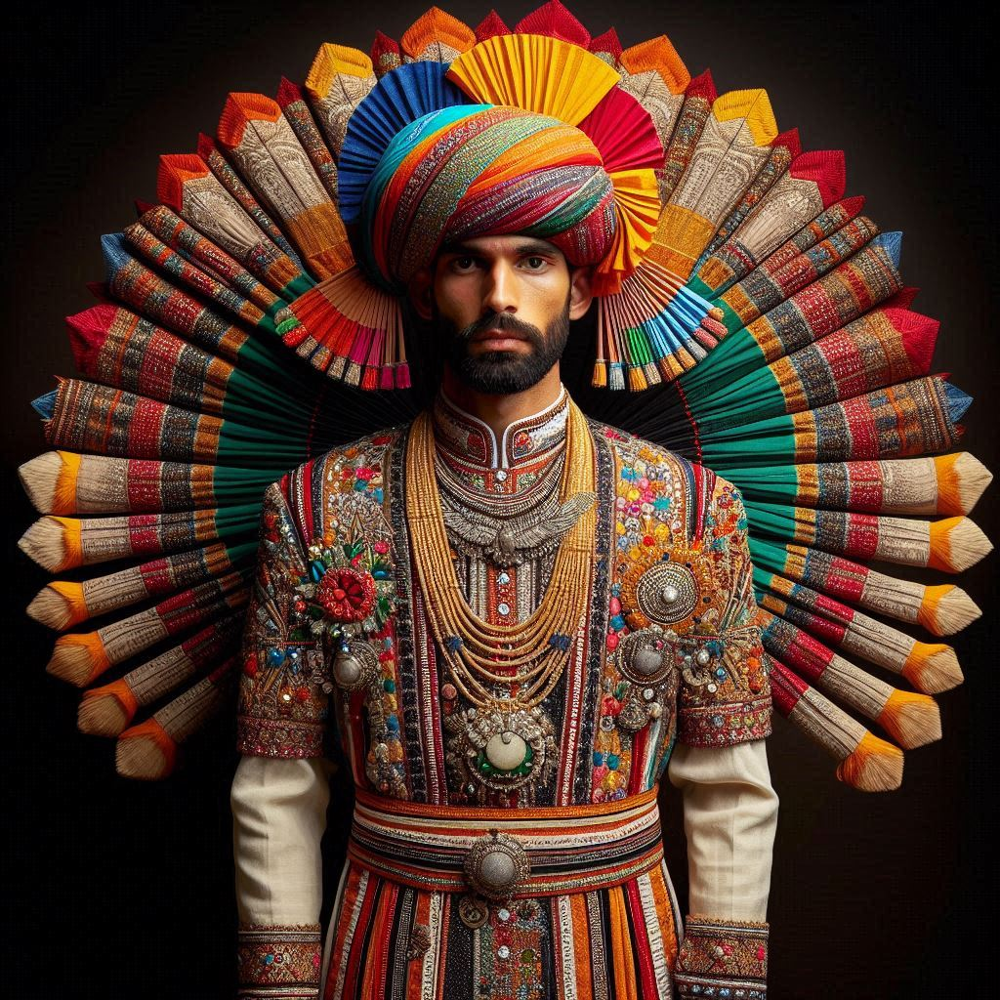

The traditional dress of Chhattisgarh is a reflection of its cultural diversity, deeply influenced by its
tribal heritage and rural lifestyle. The clothing is designed to suit the climate and the day-to-day
activities of the people, while also showcasing the rich craftsmanship of the region. Here's a detailed look
at the traditional dress of Chhattisgarh:
1. Traditional Men's Attire
- Dhoti: The most common attire for men, especially in rural and tribal areas, is the
dhoti. It is a long piece of cloth wrapped around the waist and is often worn without a shirt
in informal settings.
- Lungi: In some parts, men wear a lungi, which is a shorter version of the dhoti. It is
usually worn casually for comfort, especially during the summer months.
- Kurta or Shirt: Men usually wear a kurta or shirt along with the dhoti or
lungi. The kurta is a loose-fitting, long-sleeved garment made from cotton, well-suited for
the tropical climate.
- Headgear: Traditional headgear like pagri (turban) is worn by men during special
occasions, festivals, or ceremonies, symbolizing status and honor.
2. Traditional Women's Attire
- Lugda or Saree: Women in Chhattisgarh typically wear a lugda, a short saree, which is
draped in a traditional style. Among tribal women, the saree is often worn above the knee, which
allows for greater mobility, especially when working in the fields.
- Kachhora Style: This is a unique style of draping the saree in tribal communities, where the
cloth is passed between the legs and tucked at the back, creating a trouser-like effect for ease of
movement.
- Kosa Silk Saree: Kosa silk, a type of silk produced in Chhattisgarh, is highly prized
for its texture and durability. Women wear sarees made of Kosa silk during festivals, weddings, and
other important events. These sarees are often embellished with traditional designs and gold
embroidery.
- Blouse or Choli: The saree is paired with a blouse or choli, usually made of
cotton or silk depending on the occasion.
3. Tribal Attire
- Tribal Women: Tribal women often wear sarees with bold, earthy colors and minimal adornment,
but they may accessorize with lots of silver jewelry. Some tribes use beads, feathers, and metal
ornaments to complement their attire.
- Tribal Men: In tribal areas, men may wear simple cotton dhotis and go shirtless,
especially in rural settings. For festivals or special occasions, they may wear colorful
shawls or turbans.


4. Jewelry
- Silver Jewelry: Women in Chhattisgarh, especially in tribal communities, adorn themselves
with heavy silver jewelry, which includes necklaces, bichua (toe rings), kadas
(bangles), earrings, nose rings, and anklets. These are often large and intricately designed,
showcasing the local craftsmanship.
- Beaded Ornaments: Tribal women also wear jewelry made from beads, seashells,
and natural materials like feathers and bones, which reflect their connection to nature and
their traditional beliefs.
5. Modern Influence
- While traditional dress is still prevalent in rural and tribal areas, urban centers in Chhattisgarh
see a mix of modern attire such as salwar kameez for women and shirts and trousers for
men. However, during festivals and special occasions, even city dwellers often don traditional
outfits to honor their cultural heritage.
6. Festival and Ceremonial Attire
- Kosa Silk Sarees and embroidered kurtas are popular choices for both men and women
during festivals like Bastar Dussehra, Hareli, and Madai. Traditional
accessories like tribal jewelry, headgear, and colorful shawls are worn to mark these
celebrations.
Conclusion
The traditional dress of Chhattisgarh is simple yet vibrant, deeply influenced by its tribal heritage and
the natural surroundings. With a focus on comfort and practicality, the attire of both men and women
reflects the agrarian lifestyle of the region. The use of Kosa silk in sarees, silver
jewelry, and unique styles of draping sarees, such as the Kachhora, all contribute to the
rich cultural tapestry of Chhattisgarh. Whether during daily life or festive occasions, the clothing of
Chhattisgarh's people serves as a testament to their deep-rooted traditions and cultural pride.